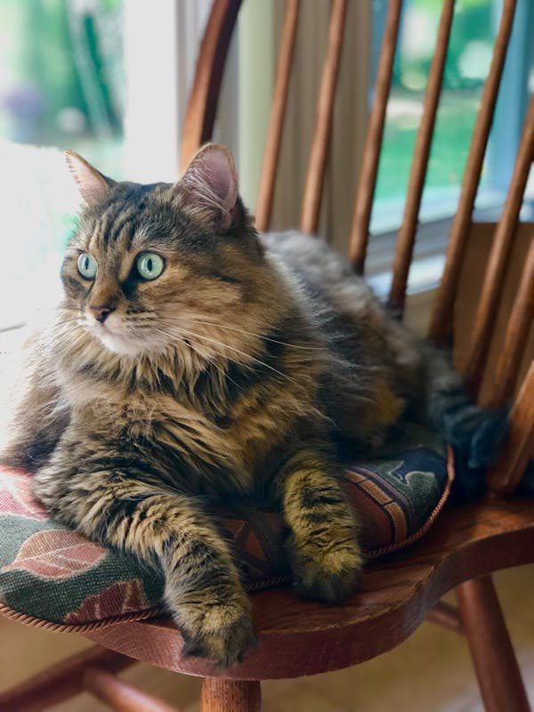

Pochi the cat

Pochi was adopted from an animal shelter and now resides in Seatle, WA, where she runs a small but
successful
web page design business exclusively for cat clients.
Profile
- favorite food-smoked salmon
- hobbies-watching fishing on ESPN, snaking on garden flowers, monitoring the apartment parking lot
- hidden talent-Karaoke
Links
Last updated on 24 June 2013 by Pochi the cat